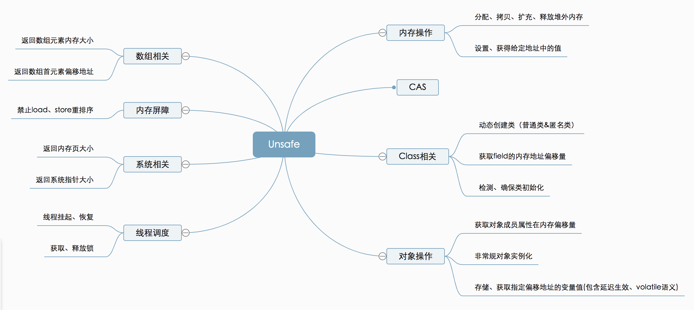

线程基础知识
概述
每个线程拥有一个自己独立的栈，但是共享进程的堆空间。
Thread 中的 run 方法是一个回调函数，与普通函数没什么区别，所以以如下方式调用run时，就是一个普通的方法执行。而 start 方法会在本地创建一个线程，然后在本地代码中通过 jvm 回调 run 方法来执行任务。
1 | Thread thread = new Thread(() -> {...}); |
线程实现方法
Thread类是描述线程的类，要实现多线程，必须继承Thread类
方法一、创建Thread类的子类
1、创建Thread类的子类，并重写run方法，其中设置线程的任务
2、创建子类对象，并执行start方法
（执行start方法会创建一个新的栈空间，并在该栈空间中执行run方法。每执行一次步骤2，就开启一个新的线程）
方法二、实现Runnable接口
推荐使用这种 —> 使用该方法时，Thread 类是咱们自定义类的静态代理类
1、创建一个Runnable接口的实现类，并重写run方法，其中设置线程的任务
2、创建对象，并将其作为参数传递给Thread类的构造方法，再调用start方法。
new Thread(new MyRunnable()).start();
匿名内部类实现： new Thread(new Runnable(){重写run方法}).start();
方法三、实现Callable接口
Callable接口类似于Runnable，但Runnable不会返回结果，也不会抛出检查异常，Callable可以，Runnable 效率比 Callable 低。
1、创建一个Callable
2、在使用的地方创建该类对象 obj 。
3、ExecutorService executorService = Executors.newFixedThreadPool(5); // 创建执行服务
4、Future
5、V result = future.get(); // 获取结果
6、executorService.shutdownNow(); // 关闭服务
同步实现方法
多个对象访问同一个资源，可以并发读取，但当其中某一个对象要修改时，就必须实现同步
锁对象选取总结为一句话就是 在同步代码中要改变谁就锁谁。
方法一： 同步代码块
synchronized (锁对象) {访问共享数据的代码} 线程不仅要抢夺CUP，还要占用锁对象。同时拥有才能执行代码
锁对象可以是任意对象，但必须是同一个对象，推荐将共享资源作为锁对象。线程占用锁对象后直到执行完毕才释放。
方法二： 同步方法
修饰符 synchronized 返回值类型 方法名 (参数列表) {访问共享数据的代码} // 该方法即为同步方法
首先将 访问共享数据的代码块 抽取出来，作为上述方法。
同步方法的锁对象默认为 this ，即调用该同步方法的对象；创建该类的对象后，该对象调用同步方法时就会锁住对象自己。
当同步方法同时也是静态方法时，锁对象为同步方法所在类的 Class 对象。
因此普通同步方法，每个对象都有一把锁；静态同步方法，所有对象共用一把锁。对同一个对象而言，这是两把不同的锁，一个锁是自己、一个锁是 Class 类模板。
方法三： Lock锁
Lock是一个接口，有两个方法 void lock() 获取锁 和 void unlock() 释放锁
它有一个实现类ReentrantLock（可重入锁）， 先实例化一个ReentrantLock对象。
在出现安全问题代码之前用该对象调用 lock() 方法。在出现安全问题代码之后用该对象调用 unlock() 方法。
lock() 和 unlock() 方法建议放在 try — finally 代码块中
synchronized 底层原理
使用时需要关联一个对象，而这个对象就是 monitor object。
管程（monitor）机制中，monitor object 充当着维护 mutex 以及定义 wait/signal API 来管理线程的阻塞和唤醒的角色。
Java 语言中的 java.lang.Object 类，便是满足这个要求的对象，任何一个 Java 对象都可以作为 monitor 机制的 monitor object。
java 对象的内存布局中，每个对象的对象头都保存了锁标识。
要进入一个 synchronized 方法修饰的方法或者代码块，会先获取与 synchronized 关键字绑定在一起的 Object 的对象锁，这个锁也限定了其它线程无法进入与这个锁相关的其它 synchronized 代码区域。
当一个线程需要获取与 synchronized 关联的 Object 的锁时，会被放入 EntrySet 中进行等待，如果该线程获取到了锁，就成为当前锁的 owner，此时 monitor + 1，当前线程可以使用该临界资源，而在该线程持有锁的期间，该线程还可以再次进入临界区，此时 monitor 再次加 1 （这就是可重入锁），同样、线程每次退出临界区 monitor 都会减 1，当 monitor 减为 0 时，代表当前线程放弃对对象锁的拥有权。如果获取到锁的线程不是因使用完放弃，而是由于缺少外部条件时就会调用 wait 方法将锁释放，进入 wait set 中阻塞进行等待。
底层使用指令码方式来控制锁的，映射成字节码指令就是两个指令：monitorenter和monitorexit。当线程执行遇到monitorenter指令时会尝试获取内置锁，如果获取锁则锁计数器+1，如果没有获取锁则阻塞；当遇到monitorexit指令时锁计数器-1，如果计数器为0则释放锁。
JVM 在执行方法之前，如果发现该方法前面有 synchronized 关键字，就先在该对象的 ID 上加锁，当其他线程执行到这个方法时，会检测该对象ID上是否加锁，如果加锁时就等待锁释放。
如果一个对象中有两个方法同时被 synchronized 修饰，则同一个对象，调用这两个方法时，只能同时执行一个。
线程状态
创建、就绪、运行、阻塞、死亡。
java线程状态
- NEW：创建线程实例，但还没有用 start()方法启动
- RUNNABLE：线程启动之后，就绪和运行状态都属于
RUNNABLE状态 - BLOCKED：竞争
synchronize锁失败，java中只有这一种进入BLOCKED的方式，Lock进入的是WAITING状态 - WAITING：通过
join、wait、lock等方法进入次状态 - TIMED_WAITING：通过
sleep、wait(time)等方法进入此状态 - TERMINATED：结束退出
线程停止
不推荐使用 Thread 类提供的 stop() 等方法。推荐自己设置一个标志位，通过调用自己实现的 stop 方法来停止线程。如下：
1 | public class MyRunnable implements Runnable { |
下方所有方法都是 Thread 类中的方法！
线程休眠
Thread.sleep(毫秒)
sleep 不会释放锁、 wait 会释放锁。两者都释放 CPU
JUC 编程中常使用 TimeUnit.SECONDS.sleep(2); 进行休眠
线程礼让
Thread.yield();
使当前线程从运行状态变为就绪状态，让 cpu 从所有就绪的线程中挑一个运行。
礼让有可能不成功，因为 cpu 可能再挑选一次还是让当前线程继续执行。
线程强制执行
join()
相当于插队，停止现在执行的线程，立刻执行自己的线程，且本线程执行结束才能执行其他线程
在下方举例代码中，主线程执行到200之前，主线程和Runnable线程交替执行，当主线程执行到200次时，Runnable 线程插队接着执行，之后Runnable线程全部执行完毕后才由主线程继续执行。
1 | public class MyRunnable implements Runnable { |
查看线程状态
Thread.State state = thread.getState();
Thread.State 是一个枚举类型，枚举类中包含的就是上方java的6个状态
线程优先级
1 最小；10 最大；默认为5。优先级越高在就绪状态很大可能越早执行，但也不是一定。
守护（daemon）线程
线程分为用户线程和守护线程。
虚拟机必须保证用户线程执行完毕，但不用等待守护线程执行完毕。
守护线程有：后台记录日志、监控内存、垃圾回收等
1 | private boolean daemon = false; // 该句为 Thread 类的源码，默认 daemon 属性是关闭的，即默认为用户线程 |
将线程设置为守护线程之后，虚拟机将不再保证该线程是否执行结束，
即只要当用户线程执行结束后就将整个程序关闭，而不考虑守护线程此时是否已经执行完毕。
线程池
底层原理
线程池就是一个容纳多个线程的容器，可由集合实现
使用步骤
1、使用线程池工厂类Executors里面的静态方法newFixedThreadPool生产一个指定线程数量的线程池，由ExecutorService接口接收。
2、创建Runnable接口的实现类，重写run方法，设置线程任务。
3、调用ExecutorService中的execute方法，传递线程任务，开启线程，执行run方法。
举例：
1 | ExecutorService executorService = Executors.newFixedThreadPool(5); // 创建服务 |
submit()方法和 execute()方法
1 | ExecutorService 中的 submit()方法和 execute()方法作用相同，只是适用于不同场景 |
JUC 并发编程
1、什么是 JUC
JUC 即与并发相关的三个包：java.util.concurrent、 java.util.concurrent.atomic 、 java.util.concurrent.locks。
2、线程与进程
一个 java 进程默认包含 2 个线程：main 线程与 GC 线程。
java 本身并不能开启线程，是通过调用本地方法（C++）实现的。
1 | // 获取本机 CPU 的核数，其实是逻辑处理器的个数 |
并行编程：利用线程池
并发编程的本质：充分利用 CPU 的资源。
并发：多个线程操作同一个资源类
3、虚假唤醒问题
在如下代码中，当条件不满足时，进入等待；当其他线程执行 notifyAll() 时，该线程被唤醒去执行业务逻辑。
但是有可能该线程被唤醒后仍然不满足条件，却没有加以判断就直接执行后续代码，这就是虚假唤醒。
1 | public synchronized void func() { |
为了避免虚假唤醒问题，所有的 wait() 都应该出现在 while 循环中，原因如下：
用 if 判断流水线状态为空时，线程被阻塞，这时 if 判断就完成了，线程被唤醒后直接执行线程剩余操作；
用 while 判断流水线状态为空时，线程被阻塞，这时 while 判断没有完成，线程被唤醒后需先进行 while 判断。
4、Lock 锁（重点）
并发工具（锁）：深入Lock+Condition - 知乎 (zhihu.com)
Lock 和 synchronized都是基于管程模型设计的。
4.1、Synchronized 与 Lock 的区别
存在层次上： synchronized 是 Java 的关键字，在jvm层面上； Lock: 是一个接口
锁的释放： synchronized: 自动释放； Lock: 在finally中必须释放锁，不然容易造成线程死锁
锁的获取： synchronized: 假设A线程获得锁，B线程等待。如果A线程阻塞，B线程会一直等待
Lock: 分情况而定，Lock有多个锁获取的方式，可以通过 tryLock() 尝试获得锁，线程可以不用一直等待
锁的状态： synchronized: 无法判断 ； Lock: 可以判断
锁的类型： synchronized: 可重入 不可中断 非公平； Lock: 可重入 可中断 可公平（两者皆可）
性能： synchronized: 少量同步； Lock: 大量同步
调度： synchronized: 使用Object对象本身的wait 、notify、notifyAll调度机制； Lock: 可以使用Condition进行线程之间的调度
排队队列：synchronized 不论是竞争锁失败还是条件不满足都只有一个排队队列。Lock 可以和 Condition 搭配根据不同条件创建不同排队队列。
公平：synchronized 为非公平锁。Lock 可以自己设置公平或非公平。
4.2、JUC 代替传统线程通信
| 阻塞 | 通知 | |
|---|---|---|
| Synchronized | wait | notify |
| Lock | await | signal |
Condition 介绍
Lock替换synchronized方法和语句的使用，Condition取代了对象监视器方法的使用。Condition接口为一个线程暂停执行（“等待”）提供了一种方法，直到另一个线程通知某些状态现在可能为真。- 一个
Condition实例本质上绑定到一个锁。 await()：阻塞自己、signal()：唤醒自己、signalAll()：唤醒所有线程
替换
- 将
synchronized变为被lock.lock()和lock.unlock()包围； this.wait()–>condition.await()；this.notify()–>condition.signal()。
1 | // Javadoc 示例 |
Condition 可以精准唤醒指定的线程
由于每个 Condition 对应一个阻塞队列，可以为每个线程增加一个判断条件，即每个线程都只能固定阻塞在某个条件的阻塞队列中，这样就可以根据条件精准地唤醒对应线程了。
5、8 锁问题
同步方法的锁对象默认为 this ，即调用该同步方法的对象；创建该类的对象后，该对象调用同步方法时就会锁住对象自己。
当同步方法同时也是静态方法时，锁对象为同步方法所在类的 Class 对象。
因此普通同步方法，每个对象都有一把锁；静态同步方法，所有对象共用一把锁。对同一个对象而言，这是两把不同的锁，一个锁是自己、一个锁是 Class 类模板。
6、集合类不安全【面试高频】
6.1、List 不安全
平时使用的如下代码，都是单线程，是绝对安全的。
1 | List<String> list = new ArrayList<>(); |
但当涉及多线程时就会出现问题
1 | List<String> list = new ArrayList<>(); |
解决方案
1、使用 Vector<>() 。【不推荐】看源码可知 Vector 的涉及并发的所有方法都被 synchronized 修饰。但其效率太低，已被淘汰。 此处有疑问：synchronized 在 jdk1.6 优化之后，Vector 为什么还不能使用？
2、List<String> list = Collections.synchronizedList(new ArrayList<>()); 使用Collections将其转换为安全 List 。
3、List<String> list = new CopyOnWriteArrayList<>(); 使用 JUC 提供的安全 List 。【推荐】
CopyOnWrite为 “写入时复制”，是计算机程序设计领域的一种优化策略。- 在写之前复制一份，在复制的 list 上写，写完再将其赋值给原来的list。
CopyOnWriteArrayList比Vector高效。 高效吗？高效在哪里？
6.2、Set 不安全
Set 与 List 遇到的不安全问题完全相同。
解决方案
1、Set<String> set = Collections.synchronizedSet(new HashSet<>()); 使用Collections将其转换为安全 Set 。
2、Set<String> set = new CopyOnWriteArraySet<>(); 使用 JUC 提供的安全 Set 。【推荐】
6.3、Map 不安全
Map 与 Set 、List 遇到的不安全问题完全相同。
1、Map<Integer, String> map = Collections.synchronizedMap(new HashMap<>());
2、Map<Integer, String> map = new ConcurrentHashMap<>(); 使用 JUC 提供的安全 Map 。【推荐】
- 有时间看 ConcurrentHashMap 的原理
7、Callable
普通线程实现方法 —》 通过 Runnable 的实现类 FutureTask 作为桥梁，将 Callable 提交给 Thread 执行。
- 同一个 FutureTask 任务只能执行一次 （无论将其交由几个线程执行）。因为其内部有一个 state ，只有 state 为 NEW 时才能开始执行，任意一个线程开始执行之后，state 就会被改变。
1 | public class CallableTest { |
线程池实现方法。搭配线程基础知识的线程实现方法的方法三看。
1 | public class CallableTest { |
8、常用辅助类【必会】
8.1、CountDownLatch
减法计数器
1 | // 计数器 |
8.2、CyclicBarrier
循环阻塞，相当于加法计数器
CyclicBarrier 构造时会指定参与的线程数量，通过barrier.await();生成屏障点，将线程阻塞在该屏障点，直到所有参与的线程都到达这个屏障点，然后统一释放。释放之后，该 CyclicBarrier 对象还可以继续使用，即再次从 0 开始计数直到足够数量的线程到达屏障点，再释放…
1 | public class CyclicBarrierDemo { |
8.3、Semaphore
信号量，和操作系统信号量一样，P 一下减 1，V 一下加 1。会限制最大并发数量。
变为方法调用，即 P –> acquire()， V –> release() 。
作用：
- 多个线程互斥共享有限资源
- 限流，限制最大并发数量。
1 | public class SemaphoreDemo { |
9、读写锁（ReadWriteLock）
解决读者写者问题。
写锁（独占锁、排他锁） 一次只能被一个线程占有
读锁（共享锁） 多个线程可以同时占有
- 读-读 可以共存
- 读-写 不能共存
- 写-写 不能共存
用法和 Lock 完全一样，在写的地方用写锁，读的地方用读锁。
1 | // 该代码示例很不恰当，会出现先读后写的问题。只用来展示 ReadWriteLock 怎么使用。 |
10、阻塞队列（BlockingQueue）
BlockingQueue<E> extends Queue<E> Queue<E> extends Collection<E>
使用场景： 多线程并发处理、线程池
四组 API
| 失败抛异常 | 失败返回特殊值 | 持续阻塞 | 限时阻塞 | |
|---|---|---|---|---|
| 添加 | add(e) |
offer(e) |
put(e) |
offer(e, time, unit) |
| 移除 | remove() |
poll() |
take() |
poll(time, unit) |
| 查看首元素 | element() |
peek() |
无 | 无 |
SynchronousQueue 同步队列 SynchronousQueue<E> implements BlockingQueue<E>
当队列中没有数据的情况下，消费者端的所有线程都会被自动阻塞（挂起），直到有数据放入队列。
*当队列中填满数据的情况下，生产者端的所有线程都会被自动阻塞（挂起），直到队列中有空的位置，线程被自动唤醒。*
put(e) take()
11、线程池【重点】
作用：线程复用、控制最大并发数、线程管理
内容：三大方法、七大参数、四种拒绝策略
11.1、三大方法
1 | Executors.newSingleThreadExecutor(); // 单个线程的线程池 |
示例：
1 | public static void main(String[] args) { |
11.2、七大参数
阿里开发手册规定，不得使用 Executors 创建线程池，应该使用 ThreadPoolExecutor。
进入上节三大方法内部，发现都是调用 ThreadPoolExecutor方法生成的线程池。该方法调用的构造方法有 7 个参数。
1 | public ThreadPoolExecutor |
11.3、四种拒绝策略
最初只有 corePoolSize个线程处理请求，当请求数量大于corePoolSize时，多出的请求进入阻塞队列。
假设用 BlockingQueueSize表示阻塞队列的容量，当请求总数大于 (corePoolSize+BlockingQueueSize)时，就用线程工厂新建 (请求总数 - (corePoolSize+BlockingQueueSize)) 个线程，即总是优先阻塞请求。
当最大线程数量都被分配完毕，且阻塞队列也满了的时候，需要拒绝策略来拒绝新的请求。
四种拒绝策略即RejectedExecutionHandler接口的四个实现类。
这四个实现类都是 ThreadPoolExecutor的静态内部类。
| 策略 | 作用 |
|---|---|
AbortPolicy (默认) |
抛出异常 |
CallerRunsPolicy |
哪条线程送你来的线程池，就送回去让那条线程执行，不抛出异常 |
DiscardPolicy |
丢弃请求，不抛出异常 |
DiscardOldestPolicy |
丢弃最早进入阻塞队列的请求，并对新请求再次执行execute。 对正在执行的请求没有任何影响。不抛出异常 |
11.4、线程池的线程数
1、 CPU 密集型任务：最优线程数应为核心数 + 1。由于CPU一直处于运行状态，如果设置的线程数过多会导致频繁的上下文切换。在理论上，最优线程数应该是核心数，但是在实际运行中，可能某个线程会因为缺页或其他异常而暂停，此时由额外线程补上，从而让CPU一直运行。
1 | Runtime.getRuntime().availableProcessors() // 将其作为最大线程容量传入即可 |
2、IO 密集型任务：最优线程数应为核心数 * 2。由于IO密集型任务线程并不是一直在执行任务，则应配置尽可能多的线程。
《Java并发编程实战》对于计算最优线程数有一个公式：最佳线程数目 = （线程等待时间与线程CPU时间之比 + 1）* CPU数目
11.5、线程池状态
线程池有个变量为：控制状态 ctl，其高三位表示下方的5中状态，低29位表示线程池中有效的线程个数。

1、RUNNING
(1) 状态说明：线程池处在RUNNING状态时，能够接收新任务，以及对已添加的任务进行处理。
(2) 状态切换：线程池的初始化状态是RUNNING。换句话说，线程池被一旦被创建，就处于RUNNING状态，并且线程池中的任务数为0
2、 SHUTDOWN
(1) 状态说明：线程池处在SHUTDOWN状态时，不接收新任务，但能处理已添加的任务。
(2) 状态切换：调用线程池的shutdown()接口时，线程池由RUNNING -> SHUTDOWN。
3、STOP
(1) 状态说明：线程池处在STOP状态时，不接收新任务，不处理已添加的任务，并且会中断正在处理的任务。
(2) 状态切换：调用线程池的shutdownNow()接口时，线程池由(RUNNING or SHUTDOWN ) -> STOP。
4、TIDYING
(1) 状态说明：当所有的任务已终止，ctl记录的”任务数量”为0，线程池会变为TIDYING状态。当线程池变为TIDYING状态时，会执行钩子函数terminated()。terminated()在ThreadPoolExecutor类中是空的，若用户想在线程池变为TIDYING时，进行相应的处理；可以通过重载terminated()函数来实现。
(2) 状态切换：当线程池在SHUTDOWN状态下，阻塞队列为空并且线程池中执行的任务也为空时，就会由 SHUTDOWN -> TIDYING。
当线程池在STOP状态下，线程池中执行的任务为空时，就会由STOP -> TIDYING。
5、 TERMINATED
(1) 状态说明：线程池彻底终止，就变成TERMINATED状态。
(2) 状态切换：线程池处在TIDYING状态时，执行完terminated()之后，就会由 TIDYING -> TERMINATED。
12、四大函数式接口【必须掌握】
虽然看着没什么用，但是 JDK 大量源码都将这些接口作为参数使用，因此必须会。
1 | Function<String, Integer> function = String::length; // 函数式接口可以直接由 lambda 表达式构造 |
| 接口 | 抽象方法 | 描述 |
|---|---|---|
Function<T, R> |
R apply(T t); |
作为一个方法，只能接受一个参数并返回结果 |
Predicate<T> |
boolean test(T t); |
同上方，只是返回结果为布尔值 |
Consumer<T> |
void accept(T t); |
消费型接口，接受一个参数，不返回结果 |
Supplier<T> |
T get(); |
供给型接口，不输入只返回 |
上述四大接口还衍生出来许多其他类似接口，例如BiConsumer<T, U>，它同样是消费型接口，接受两个参数但没有返回值，更多类似用到时心里有数就行。
13、Stream 流式计算
大数据 = 存储 + 计算
存储 ： 集合、容器、数据库
计算 ： 流
Stream 的方法中大量使用了上章四大函数式接口。
性能优化程度： Stream > ForkJoin > 普通计算
14、ForkJoin
ForkJoin 出现于 JDK 1.7。适用于大数据量（至少 1e8）并行执行任务，提高效率。
将一个大任务拆分成多个小任务（Fork），让多条线程并行执行完毕后，再将各自的结果合并（Join），得出最终结论。
工作窃取：将最终拆分好的小任务用多个双端队列存储，每个线程负责一个双端队列并从头部开始执行，当执行速度快的线程将自己负责的队列中的所有任务执行完后，就会从执行速度慢的还没有执行完的队列底部窃取任务，帮助其执行。
使用：
1、ForkJoinTask<V>抽象类，主要有两个子类，一个为RecursiveAction没有返回值；一个为RecursiveTask<V>有返回值，返回类型即为 V。在自己的计算类中根据是否需要返回值继承其中一个子类并重写compute方法。
1 | class Fibonacci extends RecursiveTask<Integer> { |
2、实例化 ForkJoinPool；实例化自己的计算类，根据是否需要返回值调用submit或execute方法。
1 | ForkJoinPool forkJoinPool = new ForkJoinPool(); |
15、异步回调
可以将异步回调理解为 Ajax 的调用过程：即当我们发起一个请求后，该请求可能会被阻塞或等待一段时间才能拿到结果，这时我们无需傻傻等待；将请求发起后就无需理会，可以直接去执行其他操作，待其执行完毕返回结果后再去接收处理。
三部曲：异步执行、成功回调、失败回调
Future 是对未来的某个事件的结果进行建模，异步回调使用CompletableFuture,它是Future 的子类且对Future增强。
1 | // 没有返回值的异步回调 |
16、JMM
JMM是面试高频，这里还是不够详细，其他知识如主线嗅探、缓存一致性、监听管道等等在面试前搞懂、理顺。
16.1、主内存与工作内存
主内存与工作内存都是 JMM 中的抽象定义，主内存是共享的，工作内存是私有的。主内存包括本地方法区和堆；工作内存包括线程私有的栈和cup缓存区。
- 所有的变量都存储在主内存中(虚拟机内存的一部分)，对于所有线程都是共享的。
- 每条线程都有自己的工作内存，工作内存中保存的是主存中某些变量的拷贝，线程对变量的所有操作都必须在工作内存中进行，而不能直接读写主内存中的变量。
- 线程之间无法直接访问对方的工作内存中的变量，线程间变量的传递均需要通过主内存来完成。
JMM定义了lock(锁定)、read(读取)、load(加载)、use(使用)、assign(赋值)、store(存储)、write(写入)、unlock(解锁)八个步骤来实现主内存与工作内存之间的 具体交互。
16.2、as-if-serial 和 happens-before
Java内存模型是为了解决在并发环境下由于 CPU缓存、编译器和处理器的指令重排序导致的可见性、有序性问题。其包括两个规则，分别是as-if-serial规则和happens-before规则。
as-if-serial规则即不管怎么重排序，程序的执行结果不能被改变。
- 对于会改变程序执行结果的重排序，JMM要求编译器和处理器必须禁止这种重排序。
- 对于不会改变程序执行结果的重排序，JMM对编译器和处理器不做要求（JMM允许这种重排序）。
为了遵守as-if-serial语义，编译器和处理器不会对存在数据依赖关系的操作做重排序。
happens-before 规则所表述的是前一个操作的结果对后续操作是可见的，解决的就是内存可见性问题。重点记前4个。
- 程序顺序规则： 同一线程内，程序按代码顺序执行（同一个线程中前面的所有写操作对后面的操作可见）
- 锁规则：如果线程1解锁了monitor a，接着线程2锁定了a，那么，线程1解锁a之前的写操作都对线程2可见
- volatile变量规则：线程1写入了volatile变量v，接着线程2读取了v，那么线程1写入v及之前的写操作都对线程2可见
- 传递性：如果操作A happen—before操作B，操作B happen—before操作C，那么可以得出A happen—before操作C。
- 线程启动规则：线程A通过执行ThreadB.start()来启动线程B，那么线程A对共享变量的修改在接下来线程B开始执行前对线程B可见。注意：线程B启动之后，线程A在对变量修改线程B未必可见。
- 线程终止规则：线程t1写入的所有变量，在任意其它线程t2调用t1.join()，或者t1.isAlive() 成功返回后，都对t2可见。
- 线程中断规则：线程t1写入的所有变量，t1调用Thread.interrupt()打断t2，t2中断后可以看到t1的全部操作
- 对象终结规则：对象调用finalize()方法时，对象初始化完成的任意操作，同步到全部主存
happen—before的关键就是对一个共享变量读之前，对这个变量的写操作要从工作内存刷新到主存。
17、volatile
volatile 的引出：当多个线程都使用了主存中的一个值，其中当一个线程对该值作出修改并刷新到主存时，其他线程并不知道该值已经被修改，继续使用旧值操作从而产生逻辑问题。为了解决该问题，出现了volatile。
volatile 是 java 虚拟机提供比 sychronized 关键字更轻量级的同步机制，访问 volitile 变量时，不会执行加锁操作。
特性：
1、保证可见性 ：当一个共享变量被volatile修饰时，它会保证修改的值会立即被更新到主存，当有其他线程需要读取时，它会去内存中读取新值。
2、不保证原子性 ：java 中自增包括取数、加一、保存三个过程的操作，假如 volitile 修饰的值执行自增，则在自增的任意一个阶段都可能被其他操作打断。
3、禁止指令重排 ：编译器、CPU 都有可能通过指令重排来优化我们的代码，指令重排即对我们的源代码重新排序。 volitile 会在写操作的前和后都设置一道内存屏障来保证程序局部的有序性。
volatile 如何保证可见性
volatile 通过缓存一致性协议和总线嗅探机制来保证可见性。
cpu1 的 线程1 与 cpu2 的 线程2 同时将主内存中的被 volatile 修饰的变量 v 加载的自己的工作内存（栈和L3缓存）。当 cpu1 的 线程1 对变量 v 修改后，总线就会发起通知， cpu2 嗅探到总线通知发现有其他线程对变量 v 产生了修改，就会将自己的 L3 缓存中的变量 v 的副本所在的缓存行置为无效状态，当线程 2 访问 v 时发现 v 所在缓存行失效就会丢弃该数据并去主内存中读取 v。
单核 CPU 不存在可见性问题！
18、单例模式
18.1、DCL 懒汉式（Double Check Lock 双重检测锁定）
第一重判断 if (lazyMan == null) 无需解释，第二重判断原因：当 a 和 b 两线程都进入第一重判断之后，a 获得锁执行完毕后释放锁，此时 b 线程获取锁又执行一次实例化操作，从而出现问题。
实例加 volatile 的原因：lazyMan = new LazyMan(); 构造并不是原子操作，分为三部：
1、分配内存空间
2、在该内存空间初始化实例
3、将该内存空间地址赋值给 lazyMan ；
指令优化重新排序后可能按 1 3 2 的顺序执行，当 a 线程执行完 3 还没执行 2 时，lazyMan 已经不为 null ，此时线程 b 在第一重判断后直接返回 lazyMan ，但是 lazyMan 指向的空间还未初始化从而出现问题。volatile 通过限制指令重排使 CPU 只能按 1 2 3 的顺序执行从而解决问题。
1 | // DCL 懒汉式 |
18.2、springboot 单例原理
springboot是通过单例注册表的方式实现单例模式的，即用一个 ConcurrentHashMap 作为单例注册表存储类名到单例的映射，每次获取单例实例时，先到注册表中查找是否已经有该实例，若有直接返回，否则新建一个实例返回并添加到单例注册表中。
19、深入理解 CAS
19.1、CAS 是什么
CAS是英文单词CompareAndSwap的缩写，中文意思是：比较并替换。CAS 是一种实现并发算法时常用到的技术，Java并发包中的很多类都使用了CAS技术。CAS需要有3个操作数：内存地址V，旧的预期值A，即将要更新的目标值B。
CAS指令执行时，当且仅当内存地址V的值与预期值A相等时，将内存地址V的值修改为B，否则就什么都不做。整个比较并替换的操作是一个原子操作。
原子操作在执行过程中，CPU会将内存的总线锁定（目前已优化为禁止访问缓存行），使其他处理器暂时无法通过总线访问内存，从而保证了读-改-写的原子性。
具体可以参考这篇文章 面试必问的CAS，你懂了吗？ - 知乎 (zhihu.com)
19.2、Unsafe 类
Unsafe类 主要提供一些用于执行低级别、不安全操作的方法，如直接访问系统内存资源、自主管理内存资源等，这些方法在提升Java运行效率、增强Java语言底层资源操作能力方面起到了很大的作用。但由于Unsafe类使Java语言拥有了类似C语言指针一样操作内存空间的能力，这无疑也增加了程序发生相关指针问题的风险。在程序中过度、不正确使用Unsafe类会使得程序出错的概率变大，使得Java这种安全的语言变得不再“安全”，因此对Unsafe的使用一定要慎重。

19.3、使用示例
普通数字 i 或由 volatile 修饰的数字执行自增操作时需要三步：取值、加一、写值。在这三步执行的任何时间都可以被打断插队执行，因此会引发并发问题：如10个线程同时各自执行1000次自增操作，则实际结果会小于10000。而 AtomicInteger 可以解决这个问题，它的计算是原子操作。
19.4、CAS 中存在的 ABA 问题
CAS 的使用流程通常如下：1）某一时刻从地址 V 读取值 A；2）以原子方式在当前时刻比较A与地址 V 的值，若一致则替换。
CAS 的原子性是指步骤2是原子操作，会通过禁止访问缓存行实现不被打断。但步骤1和步骤2之间会有一个时间差，可能会引发 ABA 问题。
如果在这段期间它的值曾经被改成了B，后来又被改回为A，那CAS操作就会误认为它从来没有被改变过。这个漏洞称为CAS操作的“ABA”问题。Java并发包为了解决这个问题，提供了一个带有标记的原子引用类“AtomicStampedReference”，它可以通过控制变量值的版本来保证CAS的正确性。因此，在使用CAS前要考虑清楚“ABA”问题是否会影响程序并发的正确性，如果需要解决ABA问题，改用传统的互斥同步可能会比原子类更高效。
20、原子引用
原子引用是带版本号的原子操作，相当于 MySQL的乐观锁。
在下方程序执行后，b 线程的 CAS 操作会失败，因为版本号已改变。
1 | public class CASDemo { |
相关知识点：Integer 缓存机制
Integer 缓存机制只适用于自动装配，等同于 Integer.valueOf(i);。
在 Integer 类第一次被使用的时候，会将 -128 ~ 127 的 Integer 对象直接组成数组保存在内存中并一直存在，以后当遇到在这个范围内的值需要自动装配时就会直接使用这个数组中的对象，只有当需要自动装配的值不在这个范围时才会重新在其他地址生成对象。
因此在上方的代码中，当构造 AtomicStampedReference时若初始值在 -128 ~ 127 的范围时程序成功执行，但当初始值不在该范围时 CAS 操作就会执行失败，因为 CAS 是直接通过 == 判断当前值与期望值是否相等，而超出范围的值都是重新分配地址，自然就会判断失败。但实际使用中通常使用字符串，字符串常量池不存在该问题。
21、锁
21.1、公平锁、非公平锁
公平锁：不允许插队，所有线程必须先来先执行。
非公平锁：允许插队，默认都是非公平的、如 synchronzied 和 lock锁。
1 | public ReentrantLock(boolean fair) { |
21.2、可重入锁
可重入 就是说某个线程已经获得某个锁，可以再次获取锁而不会出现死锁。
1 | // ReentrantLock 类的源码 |
21.3、自旋锁
对于互斥锁，如果资源已经被占用，资源申请者只能进入睡眠状态。但是自旋锁不会引起调用者睡眠，如果自旋锁已经被别的执行单元保持，调用者就一直循环在那里看是否该自旋锁的保持者已经释放了锁，”自旋”一词就是因此而得名。
21.4、死锁
如何排查：
1、在命令行使用 jps -l来定位所有存活的 java 进程的进程号。
2、在命令行使用 jstack 进程号查看进程信息。若存在死锁这些信息会反应出来。
21.5、Synchronized 锁升级
锁升级过程为：无锁状态、偏向锁、轻量级锁状态、重量级锁状态
无锁状态：没有线程来获取锁时就是无锁状态。
偏向锁：第一个线程获取锁就会从无锁变为偏向锁，并将对象头中的偏向线程id设置为该线程，线程再次获取锁时会比较当前的threadID与对象头中的threadID是否一致，如果一致则不需要通过CAS来加锁、解锁；如果不一致并且持有锁的线程还需要持续持有锁，则暂停当前线程撤销偏向锁，升级为轻量级锁。如果不再需要持续持有锁则锁对象头设为无锁状态，重新设置偏向锁。
轻量级锁：如果只有一个线程获取锁就是偏向锁，偏向锁使用过程中又有其他线程竞争锁就会变为轻量级锁。在轻量级锁状态下，线程通过CAS方式来竞争锁。注意：只CAS一次，失败就升级为重量级锁。轻量级锁用于多个线程在不同的时间段获取锁，这时CAS成功，避免阻塞带来的开销。
重量级锁：进入重量级锁后，在真正阻塞之前，默认进行10次自旋，若自旋获取锁就无需阻塞。目的还是尽量不要陷入阻塞。